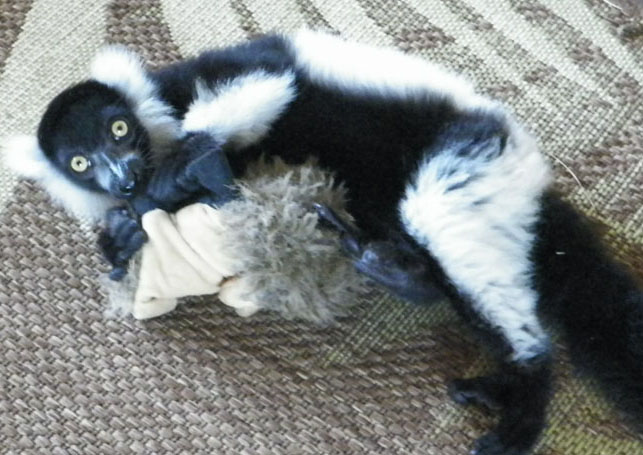

"The most unique interaction with exotic animals in Orlando!"

Meet the Kangaroo's
Meet Love Bug the Western Grey Kangaroo!
Love Bug, a.k.a. "Bug," is a one-year-old male Western gray kangaroo who will play with anyone and anything put in front of him. He is a stickler on grooming and believes all the animals need a bit of that! He is a sweetheart and loves to hug people and other animals.
Western Grey Kangaroo Quick Facts
Large and very common, found across southern part of Australia. They have thick, coarse fur and range in color from pale grey to brown. Feeding at night mainly on grasses but sometimes leafy shrubs and low trees.

Western Grey Kangaroo Quick Facts
Gestation period is 30-31 days when the baby joey attaches to the teat in the pouch for 130-150 days.
Western Grey Kangaroo Quick Facts
Mature males have a distinctive curry-like odor which gives them their nicknames: Stinker! Males are up to twice as large as females

Western Grey Kangaroo Quick Facts
They are macropods: The word "macropod" is a Greek word meaning long-footed. A macropod is a marsupial with long hind legs, which tend to use hopping and jumping as their main means of locomotion (movement).
Meet Owen!
Owen (age unknown) is a male Eastern grey kangaroo who was rescued three years ago. While he does play much, he is quite content watching the antics.
Eastern Grey Kangaroo Quick Facts
Also known as "great grey kangaroos" or "Forester kangaroos" population of several million. Males typically weigh around 145 lbs. and stand almost 6.6 feet tall. They are the second largest and heaviest living marsupial and native land mammal in Australia. The largest recorded speed of any kangaroo was 40 mph by a female eastern gray kangaroo
Meet the Lemur's

Meet Charlie the Baby Brown Lemur!
He's finally here! Charlie is just the cutest little lemur. He is getting to know his other lemur buddies. Charlie also has a cross on his head--very cool. Check out the youtube video by clicking the above photo of Charlie.
Brown Lemur Quick Facts
Their life span can be as long as 30+ years. Lives in western and eastern part of the island of Madagascar. Their mating season is May and June; gestation period if 120 days Single births are most common, but twins have been reported
Meet Lolli the Ruffed Lemur
Lolli is a two-year-old tri-colored female ruffed lemur. She is super sweet and gentle! She loves to play and have her belly and armpits scratched. NOTE TO GUESTS: Ruffed lemurs are critically endangered; and a black and white crossed with a red ruffed would not happen in the wild, making Lolli one of a kind and very unique.
Tri-Colored Ruffed Lemur Quick Facts
They have large litters, build nests for their newborns and carry them by mouth endemic to the island of Madagascar. They are the largest extant members of the family Lemuridae, range in length from 3.3-3.9 feet and weigh between 6.8 and 9.0 pounds. They are arboreal: spend most of their time high in the trees.
Tri-Colored Ruffed Lemur Quick Facts
They are diurnal: active exclusively in daylight hours diet consists mainly of fruit but sometimes nectar, flowers, leaves and seeds. They are known for their loud, raucous calls but not usually heard at night. They mature rapidly and can live in captivity up to 36 years. Their population is decreasing rapidly--an 80% decrease in the last 27 years
Lolli's News
Look for babies in the future!

Meet Poppi the Ruffed Lemur!
Poppi is a one-year-old male black and white ruffed lemur. What can I say about Poppi, other than he is a TRIP!! He will play with anyone and has never met a stranger. Be prepared to be licked and groomed and have a lemur in your lap when you come visit! He is a character for sure!
Black & White Ruffed Lemur Quick Facts
They are the more endangered of the two species of ruffed lemurs. Endemic to the island of Madagascar. They are the largest extant members of the family Lemuridae

Black & White Ruffed Lemur Quick Facts
Their population is decreasing rapidly--an 80% decrease in the last 27 years. Both males and females are always both black and white with black on their abdomens, tails, hands, feet, inner limbs, foreheads, faces and crowns; their fur is white on the sides, back, hind limbs and hindquarters

Black & White Ruffed Lemur Quick Facts
They are arboreal: spend most of their time high in the trees. They are diurnal: active exclusively in daylight hour. Diet consists mainly of fruit but sometimes nectar, flowers, leaves and seeds. They are known for their loud, raucous calls but not usually heard at night
Meet Liam the Ring-Tailed Lemur!
Liam is a three-year-old male ring-tailed lemur, a.k.a. "Boss." He is my personal pet and sleeps in the house with me, though he feels it is his job to protect not only me, but the other animals, as well. He loves them all and does NOT take kindly to other humans coming in to pet ANYONE! Unfortunately, he will be caged during guest visits, though he is fun to watch in the videos.
Ring-Tailed Lemur Quick Facts
Live in groups known as troops which include 6-30 animals but average 17. ENDANGERED because their habitat of sparse, dry forests is vanishing. Average life span in the wild is 18 years
Ring-Tailed Lemur Quick Facts
Native to Madagascar and some tiny neighboring islands have a long, boldly striped, black-and-white tail that can't be used for gripping. Diet consists of mostly fruit, but also eat insects, leaves, flowers, tree bark and sap.
Ring-Tailed Lemur Quick Facts
Adults weigh an average of 4.9 lbs with a body length between 15 and 18 inches, not including its tail, which is between 22 and 25 inches.
Meet Kiwi & Mojo
Meet Kiwi the Kinkajou!
Kiwi is a three-year-old Kinkajou. She is very sweet; and though she is nocturnal, she will come out for a few minutes to say hello and sit on your shoulder before returning to her cave. She may even show you her three-inch-long tongue when she yawns!
Kinkajou Quick Facts
Also known as the "honey bear". Rainforest mammal and is nocturnal, sleeps during the day and avoids direct sunlight. May be mistaken for a ferret or monkey, but not closely related to either. From the genus Potos, of which there are seven species native to Central America and South America
Kinkajou Quick Facts
Can live up to 40 years in captivity, with the average being 23 years. Adult body length is 16-24 inches, not including a tail length of 16-24 inches. Has a prehensile tail, large eyes, small ears, short legs with sharp claws on each of five toes. Has a slender, five-inch extrudable tongue to lick nectar from flowers and obtain fruit.

See Kiwi's long toung!
Meet Mojo the Muntjac!
Mojo is a two-year-old Muntjac deer buck and is quite playful when it starts to cool down in the afternoon. If he sees a game of some sort starting up, he is in the middle of the action. He is best buddies with Bug.
Muntjac Quick Facts
Also known as barking deer and Mastreani deer from the genus Muntiacus, of which there are 12 species. Native to South Asia
Muntjac Quick Facts
Introduced to England around 1925 and expanded rapidly. The males' "tusks" are downward-pointing canine teeth